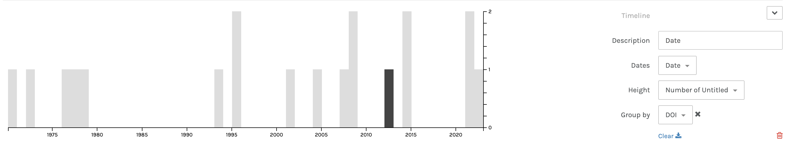

This is my book shelf that I chose to research more about. All the books
have to due with anxiety, self-esteem, or mental health. Here is the link that
will direct you to my Zotero Group
https://www.zotero.org/groups/5921816/anxiety_library_shelf

This is a timeline of my dates for each book, webbook, and website.
Here is a map of the places all my books and other resources have been
published from. The pink dots represent the place.